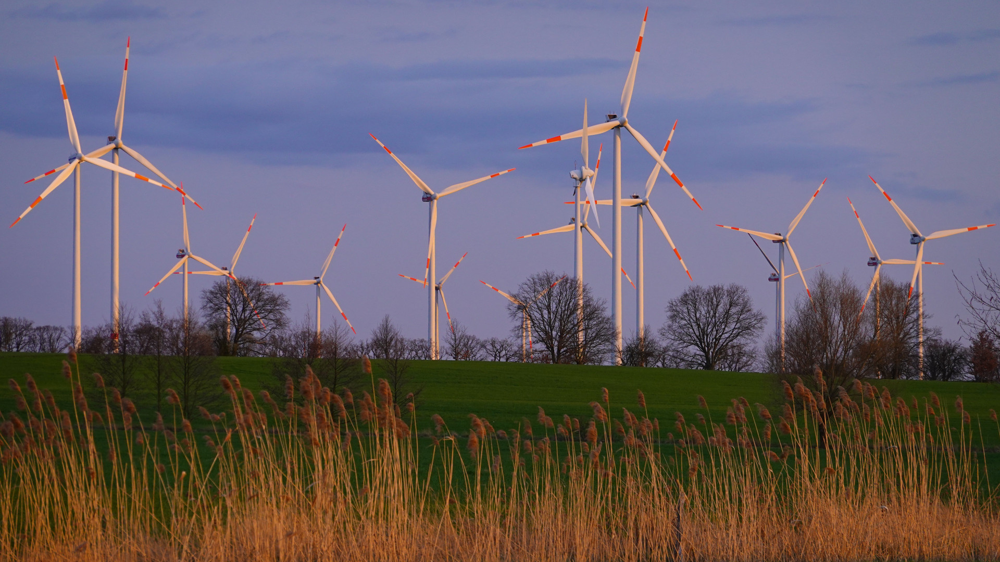

Üdvözöljük látogatóinkat oldalunkon, amely a magyarországi szélerőműveket mutatja be.
Magyarországi szélerőművek

A szélerőművek szélturbinák segítségével elektromos áramot termelnek. Magyarország területe általában nem elég szeles ahhoz, hogy nyereséggel lehessen jelentős villamos áramot termelni, de bizonyos területein a szél erőssége eléri a gazdaságos üzemeltetéshez szükséges mértéket.
Magyarországon összesen 37 szélerőmű van, összesen 172 toronnyal, 329 325 kW beépített teljesítménnyel. A legtöbb az ország északnyugati részén található.
A szélenergia potenciálja és előnyei
Bár jelenleg a napelemek dominálnak Magyarországon a megújuló energiatermelés terén, fontos felismerni a szélenergia potenciálját és előnyeit. A szélenergia egyik legfontosabb környezetvédelmi előnye, hogy – megújuló energiaforrás révén – csökkenti az üvegházhatást okozó gázok kibocsátását, illetve a légszennyezést. A teljes életciklus vizsgálatával kimutatható, hogy az elérhető technológiák közül napjainkban a szélenergia képes a legkisebb környezeti terhelés mellett nagy mennyiségű villamos energia előállítására.
A szélturbinák gyártási és telepítési folyamatai igényelnek többnyire erőforrásokat és okoznak környezetterhelést, különösen az alapozás folyamata és a torony legyártása számít problémásnak. Közepes szélsebesség esetén a korszerű szélerőművek közel 6 hónap alatt képesek megtermelni a teljes életciklusban felmerülő energiaigényüket. Egy modern szélturbina teljes életciklusra vetített kibocsátása 6 gCO2e alatti értéket vesz fel, melynek megközelítőleg felét az alapozáshoz kötődő kibocsátások és a torony gyártásához kötődő kibocsátások teszik ki.
A szélturbinák leszerelését követően a felhasznált anyagok 62%-a vagy akár 90%-a visszavezethető a körforgásos gazdaságba. Ezenfelül az is megfigyelhető, hogy a gyártók egyik legfőbb célja ennek az aránynak a további javítása. Egy szélenergiára is alapozó fenntartható energiarendszer segítségével lényegesen olcsóbban válna megvalósíthatóvá a hazánk által vállalt klímacélok elérése, valamint az energialábnyom csökkentése.
Ezen felül a szélenergia hazai térnyerése jelentősen csökkentené Magyarország energiaimportját, kiszolgáltatottságát, növeli az energiaellátás biztonságát. A szélturbina forgórészének forgási tehetetlensége egyfajta tárolt energia. Az üzemben lévő szélturbina forgó rendszere egy úgynevezett forgó tartalékot képez, mely gyorsan tud reagálni a villamosenergia-hálózat változásaira, azonban viszonylag kis energiamennyiséget képvisel, legfeljebb pár másodpercre elegendőt, ezért leginkább frekvenciaszabályozási műveletekre használhatják.
Önmagában egy szélturbina kevés forgási energiát tárol, de egy teljes szélfarm esetén a berendezések sokaságának forgórészei együtt már jelentősebb tárolási potenciált jelenthetnek. A szélenergia az élet számos más területén, így a munkalehetőségek bővítésében, helyi adóbevételek megteremtésében is jelentős szerepet vállal világszerte. Ezek a járulékos előnyök is nagymértékben hozzájárulnak a szélerőművek globális térnyeréséhez.